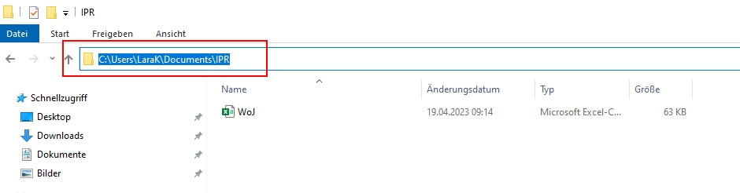
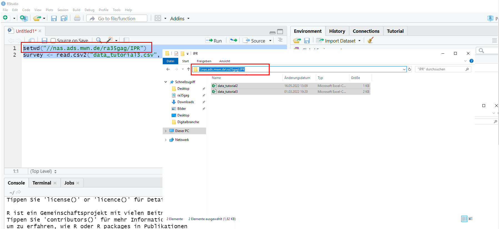
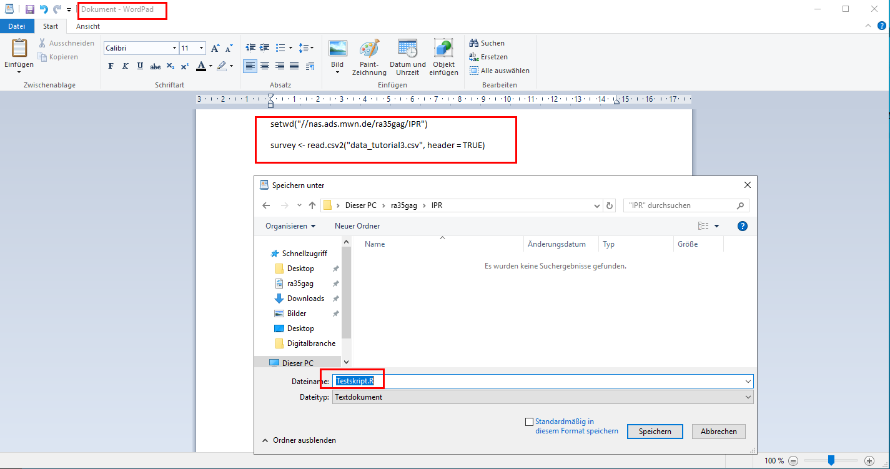
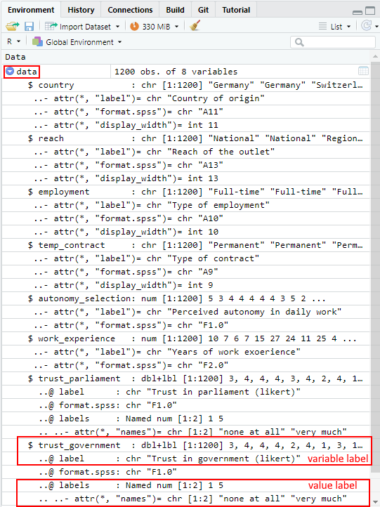

4 Tutorial: Working with data (files)
After working through Tutorial 3, you’ll…
- understand how to import data
- know how to select variables in data frames
- know how to access values in data frames
4.1 Defining your working directory
In most cases, you don’t want to manually enter all your values into R
and combine them with the c() function. Instead, you’ll likely want to
import data files that you already have on your personal computer or
drive. Therefore, the first step to importing your data into R is
usually to define your working directory.
Your working directory is the folder from which data can be imported into R or to which you can export and save data created with R.
Create a folder that you want to use as your working directory for this tutorial (or use an existing one). For this example, I’ll create a folder called “IPR” (short for In Public Repository, since this is a public tutorial). Go to that folder and copy the folder path to it:
| Image: Working Directory on Windows |
 |
| Image: Copy Working Directory on Windows |
|  |
On Mac, you go to a document in your folder and right click on it. An options menu opens and you can copy the folder path:
| Image: Copy Working Directory on MAC |
 |
Now you know where this working directory is located - but R should
know too! Telling R from which folder to import data or where to export
data is called setting your working directory. We use a function
called setwd() (you guessed it right: short for “set working
directory”) which allows us to do exactly that.
Important: The way this working directory is set differs between Windows- and Mac-Operating Systems.
Windows: The dashes need to be pointing towards the right direction (if you simply copy the path to the folder, you may need to replace these signs “\” with “/”)
Mac: You may need to add a “/” at the beginning like so:
NOTE: Setting your entire desktop as the working directory rarely works. It’s better to create a new folder on your desktop and set that folder as your working directory.
If you have forgotten where you set your current working directory, you can also ask R about the path of your current working directory with getwd():
## [1] "C:/Users/LaraK/Documents/IPR"4.1.1 Optional: Setting the working directory on a remote desktop
The LMU Munich provides you with remote desktop access to the PCs in the local CIP-Pools. If you want to use your remote desktop to run R & RStudio, you can follow this link to log into the remote desktop. This is a great fix if – for whatever reason – you can’t get R(Studio) installed on your machine and need a quick solution!
Once you have logged in to the remote desktop, you can open RStudio and set the working directory (and import data) just like it is described in this tutorial (see next image).
| Image: Working Directory (& Data Import) on a Remote Desktop |
|  |
The drawback: Since Windows does not allow RStudio to save script files without permission, you can’t save script files on the remote desktop. You can solve this with a workaround:
- Paste your script into a text file before closing RStudio. E.g., WordPad is pre-installed. Save this file as .R.
- When you want to load your script in RStudio, right click on the .R file and choose “open with RStudio”.
| Image: Saving a Script File on a Remote Desktop |
|  |
4.2 Import data from your working directory
After setting the working directory, you need to transfer the data file that you want to work with to that folder (here: the “IPR” folder). To do this, download the “WoJ.csv” file from LRZ Sync & Share using this link. The dataset is a subset of the Worlds of Journalism 2012-16 study containing survey data from 40 journalists from five European countries. Put the downloaded data file in the folder that you just set up as your working directory (here: the “IPR” folder).
The data file WoJ.csv is structured as follows:
- Each row contains the survey answers of a single journalist.
- Each column contains the values given by all journalists for a single variable.
The variables included here are:
- country: the home country of the journalist (e.g. Germany, Switzerland)
- reach: the reach of the outlet that the journalist is working for (Transnational, National, Regional, Local)
- employment: the journalist’s current employment status (Full-time, Part-time, Freelancer)
- temp_contract: the journalist’s type of contract (Permenent, Temporary)
- autonomy_selection: how much autonomy the journalist indicates to have in his/her daily work (from 1 = none at all to 5 = very much)
- work_experience: in years
- trust_parliament & trust_government: how much trust the journalist indicates to have (from 1 = none at all to 5 = very much)
We will read in the file using read.csv(). We specify the file path
in quotation marks to indicate where to find the data file. However, if
you have already set your working directory to the folder where the file
is located, you don’t need to specify the path. Additionally, we use the
argument header = TRUE to let R know that the first row contains
variable names. Finally, we assign the data file to a source object
named survey (but you could choose a different name for your source
object like WoJ or data). The data is now stored in this object.
## country reach employment temp_contract autonomy_selection
## 1 Germany National Full-time Permanent 5
## 2 Germany National Full-time Permanent 3
## 3 Switzerland Regional Full-time Permanent 4
## 4 Switzerland Local Part-time Permanent 4
## 5 Austria National Part-time Permanent 4
## 6 Switzerland Local Freelancer <NA> 4
## 7 Germany Local Full-time Permanent 4
## 8 Denmark National Full-time Permanent 3
## 9 Switzerland Local Full-time Permanent 5
## 10 Denmark National Full-time Permanent 2
## 11 Austria Local Full-time Permanent 5
## 12 Denmark National Freelancer <NA> 4
## 13 UK Regional Full-time Permanent 3
## 14 UK Transnational Full-time Permanent 4
## 15 Austria National Full-time Permanent 3
## 16 Denmark National Freelancer <NA> 5
## 17 UK Transnational Full-time Permanent 4
## 18 Switzerland Regional Full-time Permanent 4
## 19 Switzerland National Part-time Permanent 4
## 20 Denmark National Full-time Permanent 4
## work_experience trust_parliament trust_government
## 1 10 3 3
## 2 7 4 4
## 3 6 4 4
## 4 7 4 4
## 5 15 3 2
## 6 27 4 4
## 7 24 2 1
## 8 11 4 3
## 9 25 1 1
## 10 4 3 3
## 11 8 3 2
## 12 25 3 3
## 13 10 3 2
## 14 5 3 2
## 15 23 3 2
## 16 25 4 2
## 17 11 2 3
## 18 8 3 3
## 19 32 3 4
## 20 21 3 3NOTE: While read.csv() reads in comma-separated values, read.csv2() reads in values that are separated by semicolons.
To make the dataset a little more tangible, we will give the journalists 40 different fictitious names. The names will be saved into a new column in the dataset, which we will call name. Please run this code to add names to your data:
survey$name <- c(
"Rosalie", "Laurens", "Florian", "Chantal", "Cynthia", "Paul", "Jonas",
"Tanja", "David", "Ferdinand", "Caroline", "Charline", "Sev", "Theodor",
"Helke", "Joshua", "Jona", "Konrad", "Lennart", "Luise", "Wiebke", "Marie", "Rosa",
"Alma", "Ida", "Jean", "Leonie", "Tom", "Maximilian", "Viktor", "Marianne", "Velma", "Carl",
"Wolf", "Merten", "Tong-Tong", "Sal", "Joe", "Alex", "Robin"
)4.3 Subsetting variables / columns in data frames
In the Tutorial: Using R as a calculator, your variables were “floating” in your workspace or environment. They were not stored in a container, so you could call them by simply writing their name in the console. When you import data files into R, all variables in that dataset are stored in a “container,” which is your source object. These containers for variables are called data frames in R.
Variables that are part of a data frame can be accessed by their name, but we need to specify the data frame AND the variable name and combine them with the access operator: $. This takes the form of:
dataframe$variablename
# the first part is the container name, i.e. data frame
# this is followed by the access operator $
# finally, you call the variable by nameFor instance, we could retrieve the variable / column “name” in our survey data frame by simply using its variable name: We specify the object we want to access, the data frame survey and then retrieve the column name via the operator $:
## [1] "Rosalie" "Laurens" "Florian" "Chantal" "Cynthia"
## [6] "Paul" "Jonas" "Tanja" "David" "Ferdinand"
## [11] "Caroline" "Charline" "Sev" "Theodor" "Helke"
## [16] "Joshua" "Jona" "Konrad" "Lennart" "Luise"
## [21] "Wiebke" "Marie" "Rosa" "Alma" "Ida"
## [26] "Jean" "Leonie" "Tom" "Maximilian" "Viktor"
## [31] "Marianne" "Velma" "Carl" "Wolf" "Merten"
## [36] "Tong-Tong" "Sal" "Joe" "Alex" "Robin"You know that the name variable is the ninth column of you data frame.
Therefore, you can also access this column / variable by calling it by
its index number (column index, here: 9). Just like you’ve learned in
the Tutorial: Using R as a calculator, you can access sub-elements of
a greater object with square brackets [ ]:
## name
## 1 Rosalie
## 2 Laurens
## 3 Florian
## 4 Chantal
## 5 Cynthia
## 6 Paul
## 7 Jonas
## 8 Tanja
## 9 David
## 10 Ferdinand
## 11 Caroline
## 12 Charline
## 13 Sev
## 14 Theodor
## 15 Helke
## 16 Joshua
## 17 Jona
## 18 Konrad
## 19 Lennart
## 20 Luise
## 21 Wiebke
## 22 Marie
## 23 Rosa
## 24 Alma
## 25 Ida
## 26 Jean
## 27 Leonie
## 28 Tom
## 29 Maximilian
## 30 Viktor
## 31 Marianne
## 32 Velma
## 33 Carl
## 34 Wolf
## 35 Merten
## 36 Tong-Tong
## 37 Sal
## 38 Joe
## 39 Alex
## 40 RobinNote: While the first command gives you the names as a vector, the second one gives you the names as a data frame object with only one column. This keeps the column header “name” intact. However, if you want to retrieve a vector using the column index, you need to provide two indices: one for the row that you want to select, followed by a comma, and one for the column. Since we want to select all rows, but only column No. 9, we need leave the row No. blank:
## [1] "Rosalie" "Laurens" "Florian" "Chantal" "Cynthia"
## [6] "Paul" "Jonas" "Tanja" "David" "Ferdinand"
## [11] "Caroline" "Charline" "Sev" "Theodor" "Helke"
## [16] "Joshua" "Jona" "Konrad" "Lennart" "Luise"
## [21] "Wiebke" "Marie" "Rosa" "Alma" "Ida"
## [26] "Jean" "Leonie" "Tom" "Maximilian" "Viktor"
## [31] "Marianne" "Velma" "Carl" "Wolf" "Merten"
## [36] "Tong-Tong" "Sal" "Joe" "Alex" "Robin"4.4 Subsetting observations / rows in data frames
Using the same indexing technique, you can also select an entire row (i.e., journalist) by providing a row index and leaving the column index blank:
## country reach employment temp_contract autonomy_selection work_experience
## 1 Germany National Full-time Permanent 5 10
## trust_parliament trust_government name
## 1 3 3 Rosalie4.5 Subsetting values / cells in data frames
To subset values of a data set, you can call a variable / column by its name. You just have to specify the data frame, the variable name, AND the row index. For example, to look only at the first name entry in the data, which is Rosalie, you can use the following code:
## [1] "Rosalie"Now, can you guess how to access the exact same value using the column index instead of the column name?
You can enter the row index first, followed by a comma, and then finish with the column index, like this:
## [1] "Rosalie"Of course, you can use complex indexing on data frames. Let’s look at the first ten rows of the eighth (trust_government) and ninth (name) column:
## trust_government name
## 1 3 Rosalie
## 2 4 Laurens
## 3 4 Florian
## 4 4 Chantal
## 5 2 Cynthia
## 6 4 Paul
## 7 1 Jonas
## 8 3 Tanja
## 9 1 David
## 10 3 FerdinandOr select the second ten rows of the sixth (work_experience) and ninth (name) column:
## work_experience name
## 10 4 Ferdinand
## 11 8 Caroline
## 12 25 Charline
## 13 10 Sev
## 14 5 Theodor
## 15 23 Helke
## 16 25 Joshua
## 17 11 Jona
## 18 8 Konrad
## 19 32 Lennart
## 20 21 Luise4.6 Subsetting data with conditions
Let’s say we want to select all names of journalists who have a work experience of at least 25 years. This time, we’ll need to use a condition to select our rows:
## [1] "Paul" "David" "Charline" "Joshua" "Lennart"
## [6] "Alma" "Ida" "Maximilian" "Viktor" "Marianne"
## [11] "Merten"# Read: I want to select column 9 (name) from the survey data frame
# and display all rows in which the work experience column of the survey data frame has a value greater than or equal to 25Alternatively, if you want to show all columns that belong to journalists who have a work experience of at least 25 years, you would do it like that:
## country reach employment temp_contract autonomy_selection
## 6 Switzerland Local Freelancer <NA> 4
## 9 Switzerland Local Full-time Permanent 5
## 12 Denmark National Freelancer <NA> 4
## 16 Denmark National Freelancer <NA> 5
## 19 Switzerland National Part-time Permanent 4
## 24 UK Transnational Freelancer <NA> 4
## 25 Austria National Full-time Permanent 4
## 29 Austria Regional Full-time Permanent 4
## 30 Denmark National Freelancer <NA> 4
## 31 Denmark National Full-time Permanent 4
## 35 Denmark National Full-time Permanent 4
## work_experience trust_parliament trust_government name
## 6 27 4 4 Paul
## 9 25 1 1 David
## 12 25 3 3 Charline
## 16 25 4 2 Joshua
## 19 32 3 4 Lennart
## 24 29 4 4 Alma
## 25 30 3 3 Ida
## 29 30 3 3 Maximilian
## 30 35 3 3 Viktor
## 31 25 3 3 Marianne
## 35 29 3 3 MertenOf course, you can index more than one column:
## trust_government name
## 6 4 Paul
## 9 1 David
## 12 3 Charline
## 16 2 Joshua
## 19 4 Lennart
## 24 4 Alma
## 25 3 Ida
## 29 3 Maximilian
## 30 3 Viktor
## 31 3 Marianne
## 35 3 MertenFinally, you can use multiple conditions:
## country reach employment temp_contract autonomy_selection work_experience
## 9 Switzerland Local Full-time Permanent 5 25
## trust_parliament trust_government name
## 9 1 1 David4.7 Optional: Import data from various file formats
R provides a wide range of functions and packages to import data from various file formats such as Excel, SPSS, SAS, Stata, JSON and others. Here, we will focus on some commonly used file formats and the R functions to import them.
4.7.1 Importing data from Excel
We will use the readxl package to import data from Excel files. First,
we need to install and load the readxl package:
# Install and load the 'readxl' package
install.packages("readxl") # run only the first time
library(readxl)To import Excel data from your working directory into R, you can now use
the read_excel() function:
This will create a data frame named “data” containing the Excel data. By default, the first row of the Excel file is assumed to contain column names.
4.7.2 Importing data from JSON
JSON files are a popular file format for storing structured data, such
as data collected from Social Networking Sites. To import data from a
JSON file into R, you can use the jsonlite package:
# Install and load the 'jsonlite' package
install.packages("jsonlite") # run only the first time
library(jsonlite)And import your data:
4.7.3 Importing data from SPSS
SPSS files are still commonly used in social science research and you
might want to import your current SPSS projects to R. In R, we can
import SPSS files using the haven package.
# Install and load the 'haven' package
install.packages("haven") # run only the first time
library(haven)To import your data into R, use the read_spss() function (here I
repeated the entire working directory, but you could only write
read_spss("WoJ.sav")):
By default, the read_spss() function will convert user-defined
missings to NA (i.e., missings in R). If you want to read variables
with user defined missings into R (e.g., keep -9 instead of turning it
into NA), you can use the user_na argument:
read_spss reads all your labelled variables in as an object type
(i.e., class) called haven_labelled that stores your label
information. You can check your label information by inspecting your
data in your environment (by default: right-hand side of RStudio). Just
click on the blue error next to your source object:
| Image: Inspecting your labelled data frame |
|  |
NOTE FOR ADVANCED USERS: If you want to add, change, or remove any
kind of labels in R, you can use the labelled package:
To add a label to a variable, use the var_label() function:
var_labels <- c(
country = "The journalist's country of origin",
reach = "The reach of the journalist's outlet",
employment = "The journalist's employment status",
temp_contract = "The journalist's type of contract",
autonomy_selection = "The journalist's perceived autonomy",
work_experience = "The journalist's work experience in years",
trust_parliament = "The journalist's trust in the current parliament",
trust_government = "The journalist's trust in the current government"
) # Creates a vector with your variable labels
var_label(data) <- var_labels # Applies the labels to your column variablesTo add value labels to a variable, use the set_value_labels function:
trust_labels <- c("none at all" = 1, "a little" = 2, "partly" = 3, "a lot" = 4, "very much" = 5)
data$trust_parliament <- set_value_labels(data$trust_parliament, .labels = trust_labels)
data$trust_government <- set_value_labels(data$trust_government, .labels = trust_labels)To remove a variable label from a variable, use the remove_var_label
function:
And to remove a value label from a variable, use the remove_val_labels
function:
For a full documentation and a helpful cheat sheet of the labelled
package, click this
link. It also
contains information on how to use the labelled package in combination
with the tidyverse. I’ve used Base R in this tutorial.
4.8 Take-Aways
- Setting the working directory: tells R where your folder with
the data is located on your drive,
setwd(your_filepath) - Import data: after setting the working directory, with
read.csv()(comma-separated) orread.csv2()(semicolon-separated) or the package of your choice (e.g.,haven) - Access variables: either by the access operator $
(
dataframe&variablename) or by the column index[,columnNo.] - Access values: by indexing, i.e. using
[ ]and row + column indices - Conditions: you can select rows based on conditions, e.g.:
greater
>, greater or equal>=, equal==, and not equal!=
4.9 Additional tutorials
You still have questions? The following online guides can help you with that:
Now it’s your time to get into coding: Try Exercise 2: Base R.